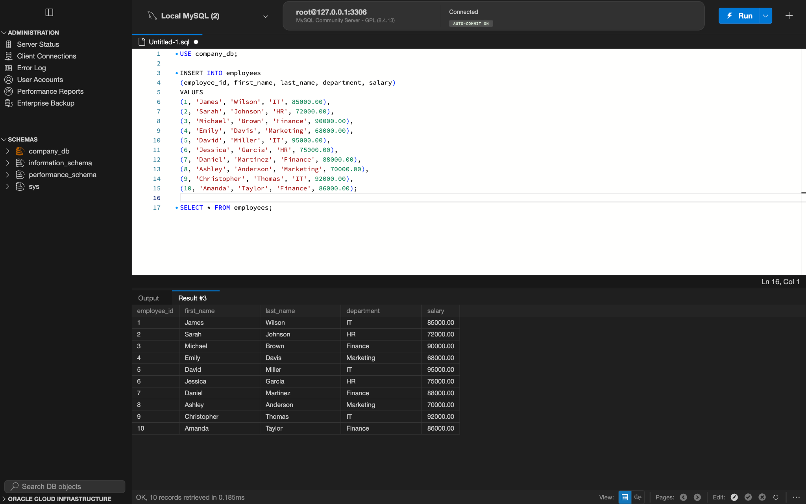
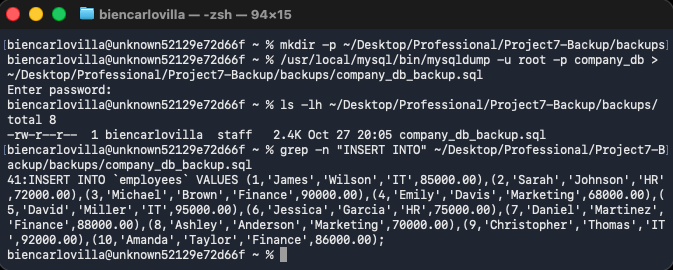
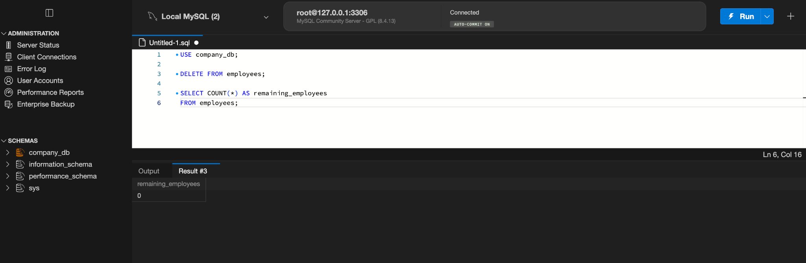
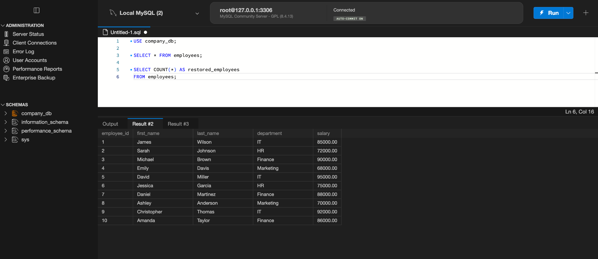
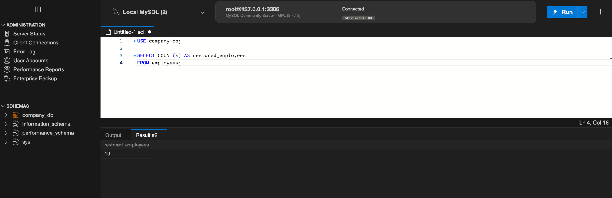

DATABASE MANAGEMENT & DATA ENGINEERING · PROJECT 03
MySQL Database Backup & Recovery
A hands-on database administration project demonstrating SQL backup, simulated data loss, full database restoration, and recovery verification.
Project Overview
I created a MySQL database named company_db with an employees table containing 10 fictional employee records. I exported a SQL backup using mysqldump, intentionally deleted the records, restored the backup, and verified that all 10 records returned. This exercise demonstrates a basic backup and recovery workflow used in database administration.
Backup & Recovery Workflow
Expand each step to view the SQL or Terminal command and supporting screenshot. The destructive deletion step was performed only in a practice database.
01 · Create Database & TableCreate a company database and define the employee schema.⌄
CREATE DATABASE company_db;
USE company_db;
CREATE TABLE employees (
employee_id INT PRIMARY KEY,
first_name VARCHAR(50),
last_name VARCHAR(50),
department VARCHAR(50),
salary DECIMAL(10,2)
);
02 · Back Up DatabaseExport database schema and sample data with mysqldump.⌄
/usr/local/mysql/bin/mysqldump -u root -p company_db > backups/company_db_backup.sql
03 · Simulate Data LossDelete employee rows to reproduce an accidental data-loss scenario.⌄
USE company_db;
DELETE FROM employees;
SELECT COUNT(*) AS remaining_employees FROM employees;
04 · Restore DatabaseImport the saved SQL backup using the MySQL command-line client.⌄
/usr/local/mysql/bin/mysql -u root -p company_db < backups/company_db_backup.sql
05 · Verify RecoveryCount restored records and review the recovered rows.⌄
USE company_db;
SELECT * FROM employees;
SELECT COUNT(*) AS restored_employees FROM employees;
Recovery Results
The original database contained 10 records. After deletion, the employee count was 0. Restoring the SQL backup returned the count to 10, and the original rows were visible in MySQL Workbench. This verifies record-count recovery for this exercise; it is not a production disaster-recovery benchmark.
Source Code & Documentation
The GitHub repository includes four SQL scripts, the example SQL backup, five screenshots, and a technical README. The example uses fictional data and is intended for demonstration.
View GitHub Repository ↗Back to Projects